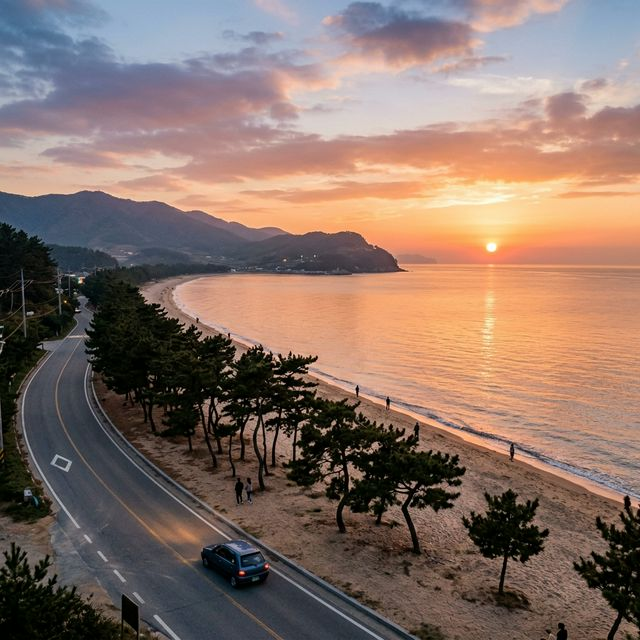

보성 녹차밭 대한다원 실시간 현황 — 5월 초록빛 물결과 인근 율포해변 드라이브 코스 총정리
"일 년 중 가장 찬란한 초록, 5월의 보성이 선사하는 압도적인 쉼표를 만나보세요!"
바람끝에 실려 오는 풀내음이 코끝을 간지럽히는 5월, 남도의 끝자락 보성은 거대한 초록색 양단을 펼쳐놓은 듯한 절경으로 여행객들을 맞이합니다. 국내 유일의 차 관광 농원인 '대한다원'은 수십만 그루의
차나무가 계단식으로 산비탈을 수놓으며, 마치 다른 세상에 온 듯한 이국적이고도 평온한 장관을 연출합니다. 특히 5월은 어린 찻잎이 가장 생기 있게 돋아나는 시기로, 눈이 시릴 만큼 푸른 녹색의 파도를
감상할 수 있는 일 년 중 단 한 번뿐인 최고의 골든타임입니다.
바쁜 일상에 지친 우리에게 보성의 녹차밭은 단순한 관광지를 넘어선 치유의 공간입니다. 사그락거리는 찻잎의 속삭임과 울창한 삼나무 숲길이 내뿜는 피톤치드는 당신의 가슴 속에 쌓인 먼지를 말끔히 씻어내 줄
것입니다. 이번 포스팅에서는 대한다원의 2026년 5월 실시간 현황과 함께, 녹차밭 투어 후 시원한 바다 바람을 만끽할 수 있는 인근 율포해변 드라이브 코스까지 알차게 정리해 드립니다. 자연이 주는
완벽한 초록의 환대를 온몸으로 느껴보시기 바랍니다.
[ 아침 햇살을 받아 빛나는 5월의 보성 대한다원 녹차밭 테라스 /
AI 제작 이미지 ]
1. 2026 5월 대한다원 방문 기본 정보 및 운영 가이드
전라남도 보성군 보성읍에 위치한 대한다원은 1957년부터 조성된 유서 깊은 차 재배지입니다. 인위적인 조형물보다는 자연의 곡선을 살린 계단식 차밭으로 세계적인 명성을 얻고 있으며, 5월은 본격적인 수확과 함께
관광객들이 가장 많이 몰리는 시기이기도 합니다. 다원의 규모가 상당하므로 방문 전 운영 시간과 요금 체계, 그리고 대략적인 코스를 숙지하는 것이 효율적인 관람을 위해 필수적입니다.
축제가 없는 기간에도 대한다원은 그 자체로 완벽한 휴식처가 됩니다. 하지만 5월 중순에는 현지에서 소규모 문화 공연이나 찻잎 따기 체험 행사가 열리기도 하니 방문 전 공식 안내를 확인해보시는 것이 좋습니다.
또한 보성의 날씨는 해안가와 인접해 있어 기온 변화가 잦으므로, 5월이라 하더라도 아침저녁으로는 쌀쌀할 수 있음을 기억해야 합니다. 초록의 파도가 시작되는 입구부터 산 정상 전망대까지, 여러분의 구석구석을
채워줄 보성의 향기를 만날 준비를 해보세요.
대한다원은 반려동물 동반이 제한되며, 흡연이나 음식물 반입이 엄격히 금지되는 청정 구역입니다. 이는 귀한 찻잎의 품질을 유지하고 방문객들에게 쾌적한 산림욕 환경을 제공하기 위한 조치이므로 적극적인 협조가
필요합니다. 또한 경사가 다소 가파른 구간이 많아 가급적 편안한 운동화를 착용하시는 것을 권장합니다. 자연 속에서의 한 걸음 한 걸음이 당신의 건강과 기분을 한 단계 업그레이드시켜줄 것입니다.
| ⏰ 운영
시간 |
매일 09:00 ~ 18:00 (하절기 기준) |
| 🎫 이용
요금 |
성인 4,000원 / 청소년 3,000원 |
| 📍 위치
|
전라남도 보성군 보성읍 녹차로 763-67 |
2. 왜 5월인가? '초록 귀인'을 만나는 최적의 타이밍
보성 녹차밭은 사계절 내내 푸르지만, 5월이 유독 특별한 이유는 찻잎의 '색'과 '질감' 때문입니다. 겨울을 이겨내고 봄의 기운을 머금은 첫 찻잎인 '우전'이나 '세작'이 돋아나는 이 시기의 녹차밭은, 기존의
짙은 성숙한 초록색과는 차별화되는 형광빛에 가까운 연두색 물결을 이룹니다. 이 햇찻잎들은 광합성을 시작하며 반짝이는 윤기를 띠는데, 아침 이슬을 머금은 5월의 차밭을 바라보고 있노라면 세상의 모든 근심이
초록색으로 세척되는 듯한 경이로운 시각적 경험을 하게 됩니다.
또한 5월의 보성은 공기의 질감부터 다릅니다. 너무 덥지도 춥지도 않은 완벽한 기온 속에서 은은한 녹차 향기가 산바람에 실려 다원 전체를 휘감습니다. 7~8월의 무더위 속에서는 야외 활동이 다소 고통스러울 수
있지만, 5월은 다원의 가파른 산책로를 걸어도 기분 좋은 땀방울이 맺히는 수준이라 걷기 여행자들에게는 천국과도 같습니다. 특히 다원 입구의 울창한 삼나무 들이 피톤치드를 뿜어내며 그늘을 만들어주어, 산소
농도가 일반 도심보다 월등히 높은 쾌적함을 선사합니다.
사진 촬영에 있어서도 5월은 최고의 계절입니다. 찻잎이 가장 풍성하고 균일하게 자라있어 어디를 찍어도 달력 사진 같은 결과물을 얻을 수 있습니다. 특히 이 시기의 태양 고도는 너무 수직이 아니어서, 계단식
차밭의 굴곡을 따라 생기는 부드러운 음영이 풍경의 입체감을 극대화해 줍니다. 5월의 보성은 단순히 보는 여행이 아니라 햇살과 바람, 그리고 색채를 온몸의 감각으로 흡수하는 '체험형 치유'의 시간입니다. 이
시기를 놓친다면 여러분은 보성의 가장 찬란한 얼굴 하나를 잃어버리는 것과 같습니다.
3. 삼나무 숲길(Samin-ro): 다원으로 향하는 성스러운 입장
매표소를 지나 대한다원의 본체로 향하는 길은 수십 미터 높이로 솟은 울창한 삼나무 숲길로 시작됩니다. '한국의 아름다운 길'로 선정되기도 한 이 구간은, 세속의 복잡한 마음을
털어내고 대자연의 품으로 들어가는 일종의 의식적인 문과 같습니다. 하늘이 보이지 않을 정도로 빽빽하게 들어선 삼나무들이 터널을 이룬 이 길을 걷다 보면, 발밑에서 느껴지는 푹신한 흙의 감촉과 코끝을 자극하는
진하고 상쾌한 숲의 향기에 금세 매료되게 됩니다.
삼나무는 피톤치드 방출량이 매우 높은 수종으로 알려져 있는데, 이곳 숲길은 실제 측정 결과 도심의 공기보다 수십 배나 맑은 공기질을 유지하고 있다고 합니다. 숲길 옆으로는 작은 계곡물이 졸졸 흐르며 청량한
소리를 더해주어, 시각과 청각, 후각이 동시에 정화되는 완벽한 힐링 동선을 제공합니다. 5월의 아침, 이 숲길 사이로 부서져 내리는 햇살인 '틴들 현상'을 배경으로 사진을 남기는 것은 보성 여행의 첫 번째
미션과도 같습니다. 연인이나 가족과 함께 이 길을 천천히 걸으며 나누는 나직한 대화는 그 어떤 값비싼 상담보다 더 큰 심리적 위안을 줄 것입니다.
숲길 곳곳에는 잠시 쉬어갈 수 있는 통나무 벤치들이 놓여 있어, 굳이 서두르지 않아도 됩니다. 가만히 앉아 고개를 들어 하늘로 곧게 뻗은 나무 끝을 바라보며 깊게 심호흡을 해보세요. 폐부 깊숙이 스며드는 맑은
공기는 도심에서 마셨던 매캐한 매연의 기억을 단숨에 몰아내 줄 것입니다. 삼나무 숲길은 단순히 녹차밭으로 가는 통로가 아니라, 그 자체로 보성이 간직한 거대한 허파이자 방문객들에게 선사하는 첫 번째 축복의
공간입니다. 이 길에서 충분히 몸을 이완시킨 뒤 본격적인 초록의 물결을 맞이하러 가보십시오.
[ 싱그러운 녹차 향기를 따라 걷는 보성 다원의 힐링 산책 코스 /
AI 제작 이미지 ]
4. 중앙 광장에서 정상 전망대까지: 초록의 계단을 오르다
삼나무 숲길을 지나면 드디어 대한다원의 시그니처인 거대한 녹차밭의 전경이 눈앞에 펼쳐집니다. 산비탈을 깎아 층층이 쌓아 올린 녹차 줄 지어 선 모습은 마치 거대한 등고선을 그려놓은 듯하며, 그 정교한 미학은
자연과 인간의 정성이 만들어낸 합작품임을 보여줍니다. 중앙 광장에는 간단한 안내소와 기념품점이 위치하며, 이곳을 기점으로 중앙 계단 코스와 우회 숲길
코스로 나뉩니다. 체력적인 여유가 있다면 중앙 계단을 통해 차밭의 심장부를 관통하며 오르는 것을 추천합니다.
오르는 중간중간 뒤를 돌아보면, 내가 걸어온 초록빛 층계들이 중첩되어 만들어내는 압도적인 스케일에 다시 한번 놀라게 됩니다. 5월의 녹차밭은 한 칸 한 칸이 생명력으로 꽉 찬 느낌을 주며, 바람이 불 때마다
찻잎들이 파도처럼 일렁이는 소리는 마음을 편안하게 가라앉혀 줍니다. 중턱에 위치한 '차밭 전망대'에서는 다원 전체의 조형미가 한눈에 들어와 사진 촬영 명당으로 꼽힙니다. 하지만 여기서 만족하지 말고 조금 더
힘을 내어 '바다 전망대'라고 불리는 다원의 최정상까지 오르실 것을 권장합니다.
정상에 다다르면 시야가 탁 트이며, 멀리 보성 만의 푸른 바다와 산맥들이 겹쳐지는 파노라마 뷰가 여러분을 맞이합니다. 초록색 녹차밭과 푸른 바다가 만나는 이 경계선에서 마시는 시원한 공기는 올라오며 느꼈던
근육의 피로를 단숨에 잊게 만듭니다. 정상 부근에는 빽빽한 편백나무 숲이 다시 한번 그늘을 만들어주어 쾌적한 휴식이 가능합니다. 정상까지의 소요 시간은 성인 기준 왕복 약 1시간에서 1시간 20분 정도이며,
산길이 다소 험할 수 있으니 호흡을 고르며 천천히 보성의 높은 기운을 만끽해 보시기 바랍니다.
5. '비밀의 정원'과 CF 속 그 장면을 찾아서
대한다원이 대중적으로 널리 알려진 데에는 수많은 영상 매체의 영향이 컸습니다. 드라마 '여름향기'부터 시작해 수많은 영화와 광고의 배경이 된 이곳은, 걷다 보면 "어? 여기
어디서 본 것 같은데" 하는 친숙함을 느끼게 됩니다. 특히 유명 통신사 광고의 배경이 되었던 독특한 기하학적 문양의 차밭 구역이나, 신비로운 분위기를 자아내어 '비밀의 화원'이라 불리는 구석구석의 산책로들은
팬들에게는 성지와도 같은 곳입니다. 5월은 식생이 가장 풍성하여 영상 속 그 감성적인 분위기를 가장 완벽하게 재현할 수 있는 계절입니다.
다원 서편으로 조금 비껴가면 나타나는 '주목나무 숲길'과 '대나무 파고라' 구역은 중앙 지역보다 상대적으로 한적하여 조용한 사색을 즐기기에
안성맞춤입니다. 이곳은 은은한 햇살이 대나무 잎 사이를 통과하며 만드는 격자무늬 그림자가 인상적이며, 마치 고전 영화 속 주인공이 된 듯한 기분을 느끼게 합니다. 연인과 함께 사진을 남기거나 혼자만의 시간을
가지기에 더할 나위 없이 훌륭한 '히든 스팟'입니다. 다원이 생각보다 넓으므로 메인 길만 걷지 말고 이정표를 따라 숨겨진 골목들을 탐험해보는 재미를 놓치지 마세요.
최근에는 이곳을 방문하는 Z세대 여행객들 사이에서 '전통 한복'이나 '피크닉 룩'으로 드레스코드를 맞추고 감성적인 숏폼 영상을 찍는 것이 유행입니다. 초록빛 배경은 어떤 색상의 옷과도 잘 어울려 소위 '인생
사진'을 건지기에 최적화된 스튜디오와 같습니다. 자연이 만들어준 완벽한 세트장 위에서 여러분만의 추억의 한 장면을 기록해보세요. 보성의 녹차밭은 한 번 보면 잊히지 않는 강렬한 시각적 잔상을 남기며, 여러분의
사진첩을 가장 싱그럽게 채워줄 것입니다.
6. 입안 가득 퍼지는 초록의 풍미, 녹차 특선 미식
다원 투어를 마치고 내려오면 본격적인 미각의 유혹이 시작됩니다. 대한다원 내 레스토랑과 카페에서는 이곳에서 생산된 신선한 녹차를 활용한 다양한 이색 요리들을 선보입니다. 가장 먼저 맛봐야 할 것은 단연
'녹차 아이스크림'입니다. 진한 녹색의 부드러운 소프트아이스크림은 은은한 쌉싸름함과 달콤함이 완벽한 밸런스를 이루며, 등산으로 달궈진 몸의 열기를 시원하게 식혀줍니다. 인위적인
색소가 아닌 원물 그대로의 색이라 보기에도 건강하고 맛은 더욱 깊습니다.
식사 메뉴로는 '녹차 비빔밥'과 '녹차 냉면'이 인기입니다. 보성의 신선한 나물과 녹차 가루를 넣어 반죽한 면 혹은 보리밥에 녹차 고추장을 곁들여
먹는 이 메뉴들은, 뒷맛이 매우 깔끔하고 담백하여 어르신들부터 아이들까지 두루 선호하는 영양식입니다. 음식을 먹는 내내 입안에 감도는 은은한 차 향기는 보성 여행의 정체성을 미각적으로 완성해 줍니다. 5월의
햇차로 우려낸 따뜻한 찻잔 앞에 앉아 산 아래 풍경을 바라보며 즐기는 식사는 세상 그 어떤 고급 레스토랑의 만찬보다 더 큰 만족감을 선사할 것입니다.
기념품점에서는 이곳에서 직접 수확한 가루차, 잎차, 그리고 녹차를 활용한 각종 화장품과 스낵류를 구매할 수 있습니다. 특히 5월에만 출시되는 한정판 '우전(첫물차)' 세트는 차 애호가들에게 최고의 선물로
꼽히니, 소중한 분들을 위한 기념품으로 고려해보시는 것이 좋습니다. 집으로 돌아가 보성의 차 한 잔을 우릴 때, 여러분의 부엌에는 다시 한번 5월의 보성 바람과 초록빛 추억이 은은하게 퍼져 나갈 것입니다.
보성의 맛은 단순한 허기를 채우는 것이 아니라 자연의 기운을 내 몸속에 직접 저장하는 과정입니다.

[ 보성 여행의 완벽한 마무리, 낙조가 아름다운 율포 솔밭 해변
드라이브 / AI 제작 이미지 ]
7. 율포해변 드라이브: 초록과 푸름의 완벽한 만남
대한다원에서 차로 약 15분 정도 산길을 내려가면 시원한 남해 바다를 만날 수 있는 율포해변(율포솔밭해수욕장)에 닿게 됩니다. 깊은 산속의 초록빛에 한참을 젖어있다가 갑자기
눈앞에 펼쳐지는 푸른 바다는 여행자들에게 짜릿한 반전을 선사합니다. 율포해변은 고운 모래사장과 함께 수령 수백 년 된 소나무 수천 그루가 해안선을 따라 숲을 이루고 있어, 햇살이 따가운 5월에도 시원한 그늘
아래에서 바다를 감상할 수 있는 명소입니다.
이곳의 드라이브 코스는 해안선을 따라 완만하게 이어져 있어, 창문을 열고 바닷바람과 소나무 향기를 동시에 맡으며 달리는 즐거움이 일품입니다. 특히 율포해변의 명물인
'해수녹차센터'는 대한다원에서 경험한 녹차를 온천수로 즐길 수 있는 이색 공간입니다. 지하 120m에서 끌어올린 암반 해수와 보성 녹차를 혼합한 온천물에 몸을 담그고, 창밖으로
펼쳐지는 남해안의 섬들을 바라보는 경험은 보성 여행의 피로를 완벽하게 날려버리는 마침표와 같습니다.
해변 인근에는 신선한 해산물을 맛볼 수 있는 횟집과 드라이브족들을 위한 감성적인 카페들이 즐비합니다. 5월이면 제철을 맞은 해물탕이나 바지락 무침으로 든든하게 배를 채우고, 해질녘 붉게 타오르는 율포해변의
노을을 배경으로 산책을 즐겨보세요. 산과 바다, 초록과 파랑이 가장 조화롭게 공존하는 이곳 보성은 여러분에게 복합적인 자연의 감동을 선사합니다. 다원 투어와 연계한 율포해변 드라이브는 보성까지 먼 길을 달려온
여행객들에게 가장 알차고 만족스러운 하루를 보장할 것입니다.
8. 실전 방문 팁 — 주차, 복장, 그리고 혼잡 회피법
인기 관광지인 만큼 대한다원을 쾌적하게 즐기기 위해서는 몇 가지 실천적인 팁이 필요합니다. 먼저 방문 시간대 선정이 가장 중요합니다. 5월의 주말은 오전 11시부터 오후 3시
사이가 가장 혼잡하여 주차장 진입에만 상당한 시간이 소요될 수 있습니다. 가급적 개장 시간인 오전 9시에 맞춰 도착하시거나, 아니면 아예 폐장 1시간 30분 전인 오후 4시 30분 이후에 방문하시면 한층
여유로운 사진 촬영과 관람이 가능합니다. 이른 아침에는 산안개가 차밭에 낮게 깔린 몽환적인 풍경을 볼 수 있다는 장점도 있습니다.
다음은 복장 가이드입니다. 평지에 있는 공원이라 생각하기 쉽지만, 보성 녹차밭은 사실상 낮은 산을 오르는 등산 코스와 가깝습니다. 경사가 급한 계단과 비포장 산길이 섞여 있으므로
굽 높은 신발이나 슬리퍼는 부상의 위험이 매우 높습니다. 가볍고 통기성 좋은 운동화가 필수이며, 산속이라 자외선 지수가 상당히 높으므로 챙이 넓은 모자와 자외선 차단제를 꼼꼼히 챙기시는 것이 좋습니다. 또한
녹차밭은 벌레가 많을 수 있으니 가급적 밝은색의 얇은 긴소매 옷을 착용하는 것이 피부 보호와 사진 촬영 두 가지 면에서 유리합니다.
마지막으로 통합 관람권 활용입니다. 보성군에서는 대한다원 외에도 인근 봇재, 한국차박물관 등을 연계한 통합 관람 시스템을 운영하고 있습니다. 만약 가족 단위로 방문하여 차 문화
전반에 대해 더 깊이 알고 싶다면, 차 박물관에서의 시음 체험과 함께 구성된 패키지를 이용하는 것이 비용 면에서 합리적입니다. 또한 다원 내부에는 화장실이나 편의시설이 입구 쪽에 밀집되어 있고 올라가면 거의
없으므로, 본격적인 산행을 시작하기 전 미리 기초 준비를 마치는 것이 즐거운 여행을 위한 작은 센스입니다.
9. 맺음말: 당신의 일상에 건네는 초록색 축복
보성 대한다원의 녹색 파도는 수십 년의 시간 동안 햇살과 바람, 그리고 누군가의 정성 어린 손길이 모여 만들어진 위대한 기록과 같습니다. 5월의 차밭은 단순히 풍경이 아름다운 곳을 넘어, 지친 발걸음에 새로운
에너지를 채워주고 혼탁해진 시야를 맑게 정화해주는 '지상 최후의 초록 낙원'입니다. 산비탈을 따라 촘촘하게 배열된 차나무 하나하나가 전하는 생명력은 말로는 다 형용할 수 없는
깊은 울림으로 당신의 가슴 속에 남게 될 것입니다.
복잡한 세상의 소리에서 잠시 귀를 닫고, 이곳 보성에서 오직 바람 소리와 내 발걸음 소리에만 집중해 보십시오. 삼나무 숲의 그늘 아래서 나를 돌아보고, 녹차밭 정상에 올라 바다를 바라보며 새로운 다짐을 하는
시간은 여러분의 2026년을 버팅겨낼 단단한 지지대가 되어줄 것입니다. 초록색은 평온과 희망을 상징한다고 합니다. 보성이 여러분에게 건네는 이 거대한 초록색 축복을 가득 안고 돌아가시길
바랍니다.
여행의 끝에서 맛보는 시원한 녹차 한 잔의 여운처럼, 여러분의 일상도 보성의 차밭처럼 늘 푸르고 싱그럽기를 소망합니다. 자연은 우리에게 아무런 대가 없이 최고의 풍경을 내어주지만, 그로부터 얻는 감동은 그
어떤 보물보다 값진 법입니다. 이번 주말, 머지않은 보성으로의 짧은 출가를 떠나보시는 건 어떨까요? 초록 물결이 일렁이는 대한다원의 언덕에서, 여러분은 분명 '다시 시작할 힘'을 얻게 될 것이라 확신합니다.
#보성녹차밭
#대한다원
#전라도가볼만한곳
#보성여행코스
#5월여행지추천
#율포해변
#보성드라이브
#녹차밭포토존
#국내여행지추천
#전남나들이